SIMULATED DATA — CREATED FOR ANALYTICAL TESTING. All data used is fictional. No figure in this report is an actual VELOOP user count, earning, withdrawal, revenue, retention or performance number. Product items are Proposed or To Be Verified unless stated.
Analyst: Hemavathi M · Intern ID: VLRINT20263720 · Version: v2, revised 20 Nov 2026 (first submission 19 Nov 2026) Repository: github.com/hemavathim988/veloop-task01 · Dashboard prototype: hemavathim988.github.io/veloop-task01/dashboard/ · Report (web): hemavathim988.github.io/veloop-task01/report/
What changed in v2 (response to review): one facts source now feeds every count in the report, workbooks and presentation; real cleaning evidence with before/after figures and a cleaned dataset; a clear split between supplied and analyst-generated data; a working dashboard prototype; prioritised business recommendations; a more visual presentation.
What was done. I designed the analytics foundation VELOOP needs (9 product areas and 17 features mapped, 39 events, 82 fields across 10 entities, 46 KPIs), then tested it on the supplied simulated files: profiling, cleaning, relationship tests, KPI formula tests and a working dashboard prototype.
What was found. 1. Cleaning works and is
measurable. Users 1,008 to 1,000 rows and events 35,714 to
35,704 after removing exact duplicates; 9 inconsistent text values fixed
(feature labels 20 to 15); 9 user rows flagged for missing or malformed
required fields and kept, never imputed. 2. Cleaning has limits
that matter. Checked against the supplied reference sheets,
35,702 of 35,704 events and 995 of 1,000 users match; the remaining
differences are wrong values no format rule can detect (see section 3).
Offsetting defects also hid from simple counts: the “Success” total was
14,430 before and after cleaning because 4 duplicates and 4 mis-spelled
values cancelled out. 3. Only 7 of the 39 proposed events exist
in the supplied event list. Supplied names are feature-specific
(for example ad_completed, captcha_completed),
which would fragment a single task-completion KPI. 4. KPI
testability: 17 of 46 KPIs are calculable on supplied data, 4
partly, 22 only on analyst-generated stand-in data, 3 have no data. 5.
Direct personal data (name, email, gender) sits in the
analytics files and is removed in the cleaned dataset.
What VELOOP can and cannot use. Designs, rules, formulas and controls are reusable once product facts are verified. The numbers (for example 57.2% task completion) are simulated and must not be quoted as VELOOP results. The simulated task and failure data is near-uniform across categories, so it contains no business signal.
Top recommendations (details in section 9): stable IDs with an idempotency key; validation at ingestion; one generic task-event model; daily rewards-to-wallet reconciliation; timestamped withdrawal lifecycle; one referral definition; remove direct identifiers; build dashboards in three phases.
Open items. Product facts are mostly unverified (15 assumptions). I checked the public site, velooprewards.in: its About page confirms only that VELOOP is an online rewards and engagement platform using internal units named VEs, XP, Gems, Tokens, Spins and badges, and that withdrawal concerns are handled by support. How events, IDs and withdrawals work in the product is not confirmed. Support KPIs have no data, and the Rewards, Wallet, Withdrawals and Referrals tables were not supplied.
| Dataset | Origin | Used for | Limit |
|---|---|---|---|
| Users (clean + messy sheets) | Supplied | schema, cleaning test, reference | simulated numbers |
| Sessions, Feature Events, Daily Activity, Task Activity, Milestones | Supplied | KPI tests, dashboard | simulated; near-uniform mixes |
| Event audit sheet | Supplied | cleaning test | planted defects |
| Rewards (6,275), Wallet (6,649), Withdrawals (1,200), Referrals (900) | Analyst-generated
(scripts/generate_supplementary.py, seed 20261118) |
join, control and formula tests | assumptions, not behaviour |
The shared Drive folder holds only the two supplied workbooks, so the four stand-in tables were generated, labelled and documented as the brief allows. They must be replaced by real data, never mixed with it.
| Finding | Usable for VELOOP? |
|---|---|
| Event, field, KPI and model designs; quality controls; governance; backlog | Yes, after product facts are verified |
| Cleaning rules and the lesson that count checks hide offsetting defects | Yes |
| Remove direct identifiers from analytics | Yes |
| Proposed events missing from supplied list (7 of 39) | Yes, if engineering confirms the files mirror real event names (A001) |
| Rates such as 57.2% completion, 2.7% reversal, withdrawal timings | No, simulated or generated |
Rules are coded in scripts/clean_data.py; the log is in
the profiling workbook (Cleaning_Log,
Before_After, Cleaning_Validation); the
cleaned data is in data/cleaned/ and
VELOOP_Task01_Cleaned_Datasets.xlsx.
| Dataset | Rule | Result |
|---|---|---|
| Users | Remove exact duplicate rows | 8 removed (1,008 to 1,000); kept in quarantine |
| Users | Trim spaces | 0 values needed changing |
| Users | Malformed date 2026-14-02 12:00 |
blanked and flagged; a day/month swap would give 14 Feb but the reference holds a different date, so guessing is unsafe |
| Users | Missing required fields (8 cells in 8 rows) | flagged in dq_missing_required, never imputed |
| Users | Data minimisation | name, email, gender dropped; age banded |
| Events | Remove exact duplicates | 10 removed (35,714 to 35,704) |
| Events | Trim and standardise text | 5 feature names and 4 status values mapped to the controlled vocabulary; distinct feature labels 20 to 15 |
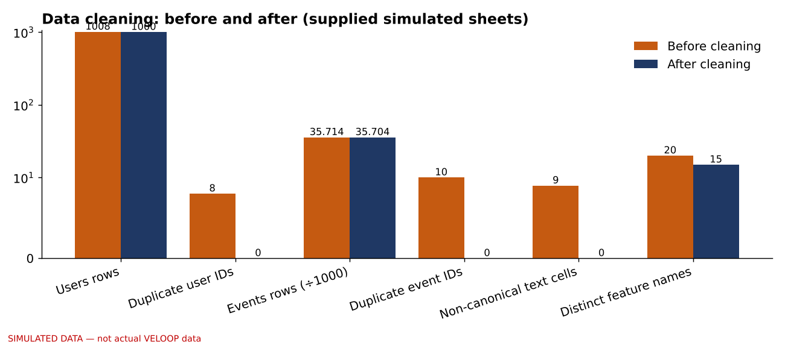
Validation against the supplied reference sheets. Events: 35,704 rows, 35,702 identical. Users: 1,000 rows, 995 match on 20 shared fields (the 5 differences are the blank cells that were deliberately left blank).
Honest limits. (a) Two events (EVT00000007,
EVT00000008) read "success " in the audit sheet but
Started in the reference: a format fix cannot know the
value was wrong. (b) Two users (VLUSR000021, VLUSR000022) have plausible
but different registration dates than the reference; only reconciliation
with a source of truth could catch that. These show why quality control
needs reconciliation as well as format checks.
Profiling. Every sheet was profiled for records,
columns, date range, unique IDs, duplicates, missing values, categories,
status distribution and numeric ranges (workbook sheets
Dataset_Profile, Field_Profile,
Status_Distributions). Behaviour-workbook joins (users,
sessions, events, tasks, milestones) resolve with 0 orphans across 8
links. The two supplied workbooks share all 1,000 user IDs but disagree
on names and registration times, so they are treated as independent
simulations.
Audit. On the supplied sheets, 25 checks ran: 17 found problems, 8 passed. On the stand-in tables, 10 checks ran; all 5 planted defects were detected at the planted counts (6 duplicate wallet IDs, 5 orphan users, 4 impossible timestamps, 4 self-referrals, 3 negative rewards) and the reward-to-wallet reconciliation found no gaps.
| Stage | Control |
|---|---|
| Application | required fields; ISO-8601 UTC; shared allowed-value lists |
| Collection | reject events without event_id, user_id,
timestamp; schema version check |
| Raw | immutable storage; quarantine table with reject reason |
| Transformation | trim and standardise; dedupe on event_id /
transaction_id; state-machine rules |
| Analytics layer | referential integrity; daily reconciliation of credited rewards to wallet credits |
| Dashboard | freshness and row-count banner; show quarantined counts |
Coverage. 9 product areas, 17 features, 14 gaps
(workbook Coverage_Matrix, Analytics_Gaps).
Event plan: 39 events named object_action
in snake_case (readable, groups by object); each carries
event_id, user_id, timestamp,
schema_version.
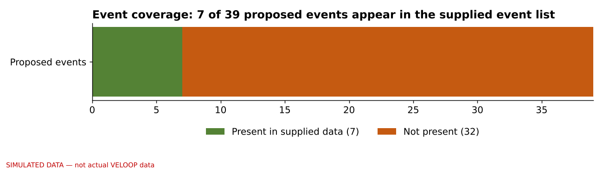
Data dictionary: 82 fields in 10 entities, every field with type, definition, example, allowed values, validation, source, sensitivity and use. Logical model:
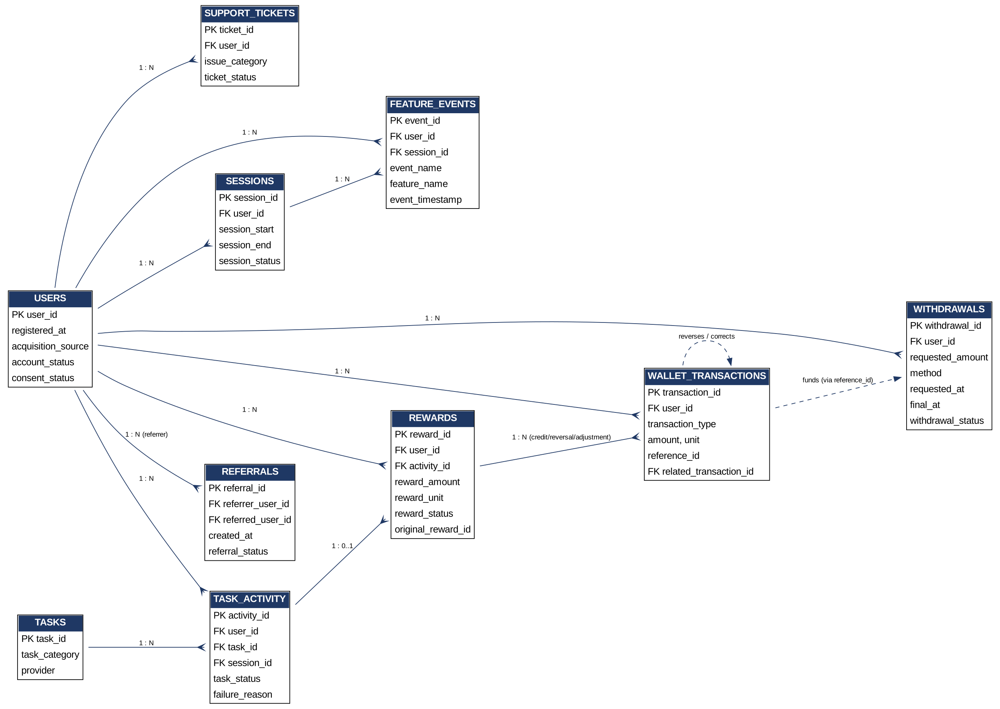
Keys: each entity has its own primary key (user_id,
session_id, task_id, activity_id,
reward_id, transaction_id,
withdrawal_id, referral_id,
event_id, ticket_id). Users > Sessions,
Task Activity, Rewards, Wallet Transactions, Withdrawals, Referrals,
Feature Events and Support Tickets is one-to-many; Tasks > Task
Activity is one-to-many; Task Activity > Rewards is
one-to-zero-or-one; Wallet Transactions reference themselves for
reversals; Referrals.referred_user_id is a second link to
Users.
KPI catalogue: 46 KPIs (User 8, Engagement 12, Reward 7, Wallet 4, Withdrawal 8, Referral 4, Support 3), each with definition, formula, fields, source, frequency, stakeholder, purpose, interpretation, limitation and testability. No targets are set.
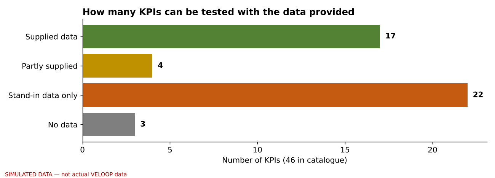
Specifications in brief.
provider so partner failures are not counted as VELOOP
failures.transaction_id, type, signed amount, unit, status,
reference_id, related_transaction_id.
Withdrawal lifecycle: Requested > Processing > Completed, or
Rejected; Completed can become Reversed. Eight withdrawal KPIs defined
(KPI-D01 to D08).A working dashboard built on the supplied simulated data (rewards use
the stand-in):
hemavathim988.github.io/veloop-task01/dashboard/;
source in dashboard/index.html.
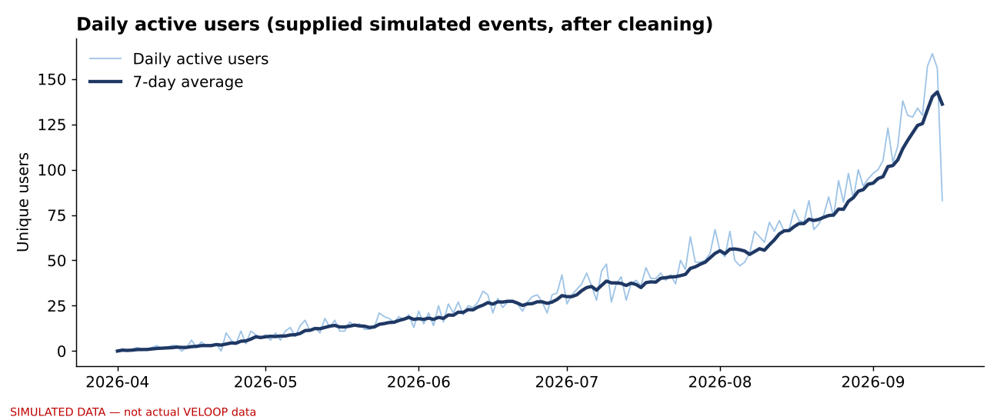
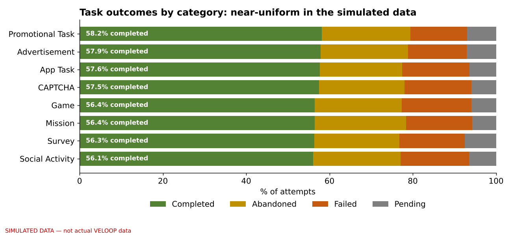
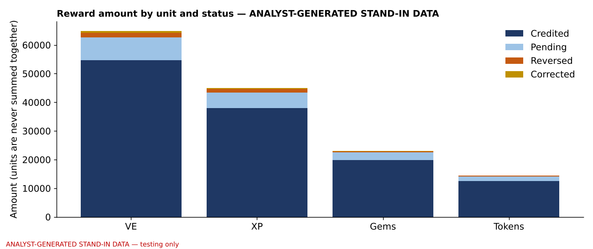
The seven proposed dashboards (Executive, User, Engagement, Rewards,
Wallet, Withdrawals, Referrals) are specified as wireframes in
docs/diagrams/; the prototype implements the Executive,
Engagement and Rewards views first.
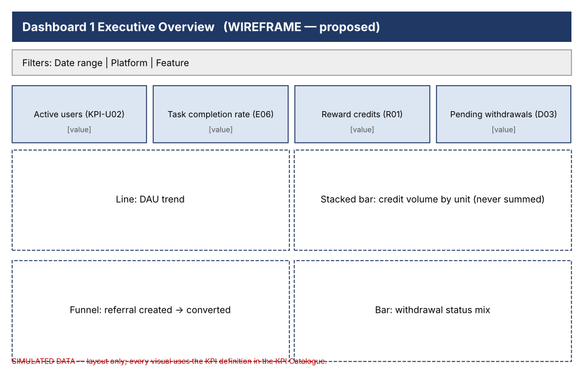
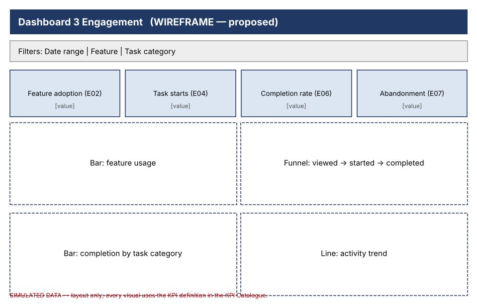
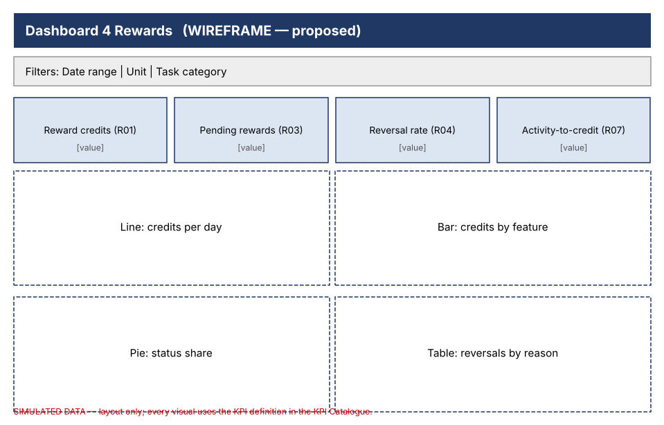
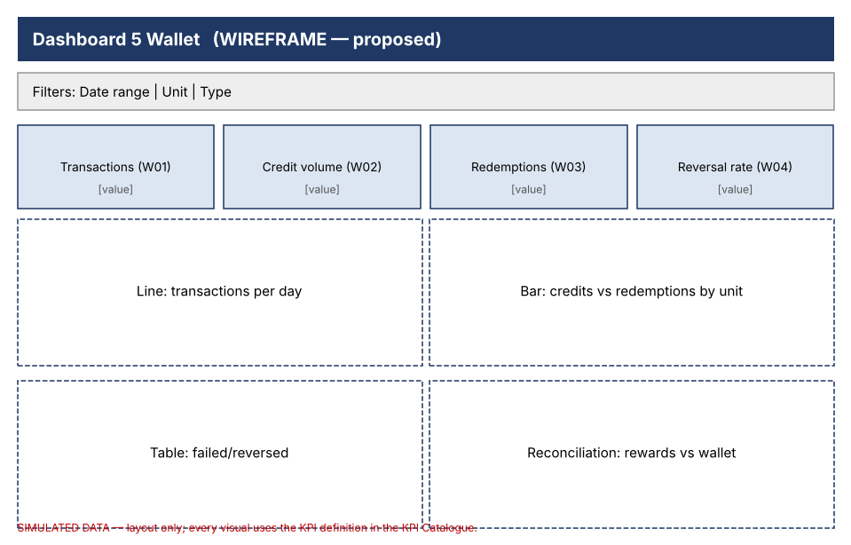
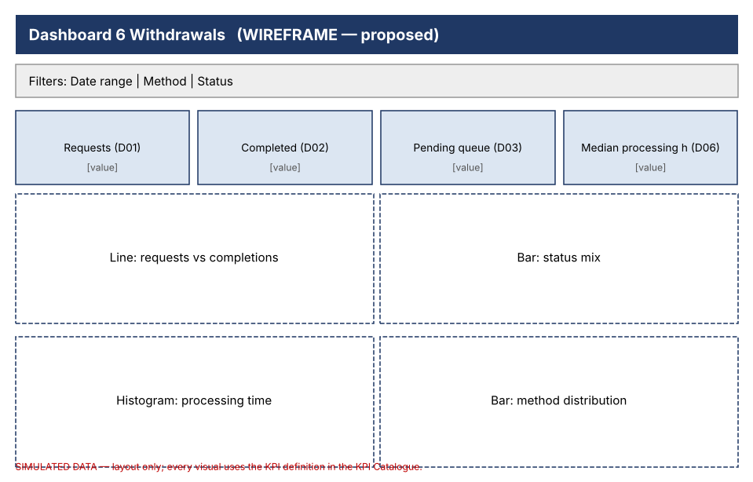
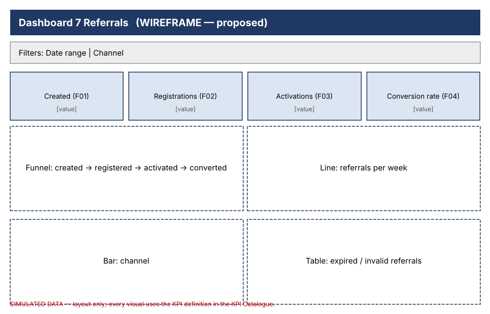
Common payload: event_id (UUID, idempotency key),
user_id, timestamp (UTC),
schema_version.
| Req | Event and trigger | Required payload | Deduplication and acceptance test |
|---|---|---|---|
| REQ-01 | task_completed: completion passed validation |
task_id, task_type, attempt_id, status, reward_amount, reward_unit | one per attempt_id; one usable event per valid
completion |
| REQ-02 | reward_credited: reward posted to wallet |
reward_id, amount, unit, source_ref, transaction_id | one per reward_id; replay creates no second credit
event |
| REQ-03 | reward_reversed: credit reversed |
reward_id, original_reward_id, amount, unit, reason_category | one per reversal; original must exist |
| REQ-04 | wallet_transaction_created: ledger entry written |
transaction_id, type, amount, unit, status, reference_id | transaction_id unique; duplicate rejected and
logged |
| REQ-05 | withdrawal_requested: user requests payout |
withdrawal_id, amount, unit, method | withdrawal_id; amount above 0, one event per
request |
| REQ-06 | withdrawal_completed: payout confirmed |
withdrawal_id, method | one final state; only after processing |
| REQ-07 | withdrawal_rejected: request rejected |
withdrawal_id, reason_category | one final state; reason from approved list |
| REQ-08 | referral_converted: conversion rule met |
referral_id, conversion_rule | one per referral; only after activated |
| REQ-09 | user_registered: account committed |
registration_source, platform, device_type | user_id unique and immutable |
| REQ-10 | task_failed: attempt fails |
task_id, attempt_id, failure_category | one per attempt; category in proposed list |
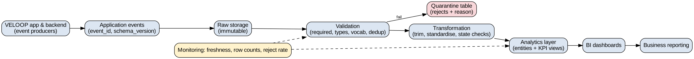
Start practical: backend writes events to managed storage, daily SQL transformations, one BI tool; move to streaming or a warehouse only when volume justifies it. Engineering owns emission, Data owns validation and models, Product owns definitions. Failures: idempotent retries, alerts on freshness and row counts, replay from raw.
Governance. Engineering: event implementation.
Analyst: approved analytical datasets with pseudonymous
user_id. Product and Operations: aggregated reporting.
Content: aggregated content metrics. Intern: sanitised data only. Never
expose passwords, secrets, API keys, payment or private credentials, or
security controls; keep name, email and exact location out of the
analytics layer.
Change management. A versioned Metric/Event Change
Log (docs/change_log_template.csv: date, change, old and
new definition, reason, affected KPIs, dashboards and reports, owner,
version). Events carry schema_version; a renamed field
keeps an alias for one release; a KPI definition change bumps the KPI
version and is annotated on dashboards.
Evidence labels: Test = observed in the supplied simulated files or my tests; Design = required by the model. None of these cites VELOOP performance.
| # | Recommendation | Evidence | Benefit; owner; stage |
|---|---|---|---|
| 1 | Issue stable user_id, event_id
(idempotency key) and transaction_id |
Test: 8 duplicate users, 10 duplicate events; offsetting defects hid from counts | Trustworthy counts; money reconciliation possible. Engineering; Prelaunch |
| 2 | Validate at ingestion against controlled vocabularies | Test: 9 text variants split features into 20 labels instead of 15 | Correct feature and status reports. Engineering, Data; Prelaunch |
| 3 | Use one generic task-event model (task_started,
task_completed, with task_type,
provider) |
Test: only 7 of 39 proposed events appear; supplied names are feature-specific | One completion KPI across ads, surveys, games. Engineering; Prelaunch |
| 4 | Run a daily reconciliation: credited rewards equal wallet credits | Test: method found 0 gaps on stand-in data and caught all planted defects | Early detection of reward leakage; finance trust. Data, Engineering; Prelaunch |
| 5 | Record withdrawal timestamps and reason categories | Design: processing time and queue KPIs cannot be computed without them | Operations can manage queue and delays. Engineering; Prelaunch |
| 6 | Define referral activation and attribution once | Design: registration is not conversion; sources must agree | A referral KPI the team can defend. Product; Prelaunch |
| 7 | Remove name, email, gender from the analytics layer | Test: present in both files | Lower privacy risk with no loss of KPIs. Data, Legal; Prelaunch |
| 8 | Capture partner status on third-party tasks and session end reason | Design: failures cannot be attributed otherwise | Separate VELOOP faults from partner faults. Engineering; Prelaunch |
| 9 | Build dashboards in phases | Prototype shows what the events already support | Early value without waiting for every table. Analytics; Post-launch |
Phasing. Phase 1 (events already supported): user activity, engagement, task funnel. Phase 2: rewards and wallet with reconciliation. Phase 3: withdrawals and referrals once lifecycle fields exist.
How the system helps decisions. Examples of questions the KPIs will answer once real data exists: which task types abandon most, whether pending withdrawals are growing, whether reversals cluster by reward source. The simulated data cannot answer these; it only proves the pipeline can.
| Area | Score (0–5, analyst judgment) | Evidence |
|---|---|---|
| Event coverage | 1 | 7 of 39 proposed events seen |
| Data model | 2 | designed and join-tested on simulated data only |
| Data dictionary | 3 | 82 fields, all Proposed |
| KPI definitions | 3 | 46 defined; 17 testable on supplied data |
| Data quality | 3 | cleaning evidence and tested controls; no production pipeline |
| Dashboard readiness | 2 | working prototype on simulated data |
| Engineering instrumentation | 1 | unknown; 15 open assumptions |
| Access control | 1 | proposed model only |
| Documentation | 4 | report, workbooks, scripts |
| Reporting | 1 | no production data |
Assumptions: 15 open (workbook
Assumptions; sources in Source_Register,
including the official About page, which names the reward units but
gives no engineering detail), for example whether backend emits task
completion events, whether transaction_id exists, referral
activation rule, reward units, withdrawal methods and timezone.
Backlog: 16 items in Backlog; Critical:
stable user ID, unique transaction ID, withdrawal IDs with timestamped
transitions, reward record with amount, unit, status and source link,
and event_id idempotency key.
Run python scripts/clean_data.py,
generate_supplementary.py,
analyze_supplementary.py, dash_data.py,
make_charts.py, make_diagrams.py,
build_workbooks.py (seed 20261118). All counts come from
scripts/facts.py.
| Brief deliverable | Where |
|---|---|
| 01 Executive summary, 21 Final report | this report, section 1 |
| 02 Product data audit | section 5; workbook Coverage_Matrix,
Analytics_Gaps |
| 03 Coverage matrix, 08 Event plan, 09 Data dictionary, 11 KPI catalogue, 19 Assumptions, 20 Backlog | VELOOP_Task01_Blueprint.xlsx |
| 04 User spec | workbook User_Spec |
| 05–07 Earning, wallet, referral specs | section 5 |
| 10 Logical model | section 5; docs/diagrams/er_diagram.png |
| 12 Profiling, 13 Quality audit | VELOOP_Task01_Data_Profiling_and_Quality.xlsx; sections
3–4 |
| Cleaned dataset | data/cleaned/,
VELOOP_Task01_Cleaned_Datasets.xlsx |
| 14 Dashboard blueprint | section 6; wireframes and dashboard/index.html |
| 15 Developer handoff | section 7 |
| 16 Pipeline, 17 Governance | section 8 |
| 18 Readiness | section 10 |